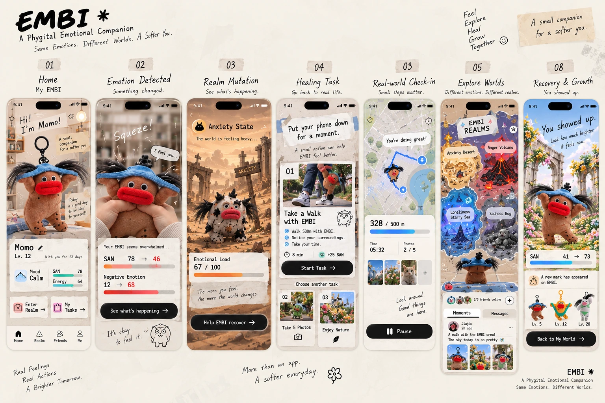

Feelings are
not the enemy.
情绪本身不是敌人。我们想回应的是无法被觉察和消化的情绪积累。
A Phygital Emotional Companion
Turning feelings into worlds,
and small actions into
visible recovery.
Same Emotions. Different Worlds.
A Softer You.

01 / Design context
当压力没有出口，会发生什么？
学业、工作、家庭的期待，或对未来的不确定：压力往往不是一个巨大的事件，而是每天积累的一点点疲惫。缺少私人空间，也让表达情绪变得困难。
临近毕业的学生 Katie，面对学业、未来与家庭期待，却没有属于自己的房间。
广告行业主管 Kenneth，在工作目标与客户要求之间，很难留出完整的休息时间。
来自原项目中的设计情境（PDF pp. 3–4），并非实证访谈结论。
知道自己不好受，
并不等于知道下一步应该做什么。
The design question
How might we transform an abstract emotion into something users can notice, respond to, and gradually reshape?
我们能不能把看不见的情绪，变成一个能被发现、被回应、最后被改变的东西？
02 / Design philosophy
情绪本身不是敌人。我们想回应的是无法被觉察和消化的情绪积累。
真正的变化来自现实生活中的微小行动。走一小段路，也是向前的一步。
让看不见的情绪在数字世界留下痕迹，也让用户的回应变得可见。
You don't defeat the emotion.
You learn to live with it, respond to it,
and rebuild your world.
03 / My contribution
我在这个项目里负责什么？
EMBI 是团队项目。以下呈现我提出和参与发展的部分；整体成果由团队共同完成。
我提出 EMBI 最初的产品概念，并推动团队将它发展成实体玩偶 × 数字世界的体验。
我参与建立核心情绪闭环：情绪积累 → 发泄 / 触发 → EMBI 异化 → 世界受到影响 → 引导行动 → 恢复 → 成长。
我参与设计实体 EMBI 与数字角色之间的关系，让玩偶不是周边，而是真实世界中的互动入口。
我参与设计现实世界任务机制：步行、拍照、外出、打卡与现实活动。
我提出或参与发展地图探索与现实地点打卡的体验。
我参与设计好友进入彼此世界、陪伴和共同恢复的机制。
我参与设计用户处于低谷 / 情绪失控状态时系统如何引导，而不是单纯给奖励或继续游戏。
04 / Physical × digital
同一个 EMBI，活在两个世界。
现实中的按压强度与频率，被转换成数字世界里的变化。
REAL WORLD / 实体玩偶
Hold gently.
Let something out. ↗
SQUEEZE / TOUCH / INTERACT
按住试试，再松开。
↓ EMOTION DATA ↓
DIGITAL REALM / 数字世界
交互概念来自 PDF pp. 5–9。此处通过按住按钮模拟传感器输入，不读取真实情绪或连接硬件。
05 / The emotional interaction loop
感受到情绪
允许它存在。
通过 EMBI
与情绪互动。
角色异化，
世界随之改变。
看见积累的影响，
而不只是数字。
离开屏幕，
做一个现实行动。
异化消退，
世界开始恢复。
现实中的努力，
留下长期痕迹。
原项目规则：情绪点超过 60 触发提醒；完成现实任务降低情绪点并获得 EXP（PDF pp. 8–12, 17）。SAN 与情绪点为概念游戏数值。
06 / Interactive high-fidelity prototype
From emotion to action.
从一次触碰开始，体验完整闭环。
8 个状态 · 可点击体验
演示数据；不使用真实 GPS、传感器或好友连接。
07 / Why the loop matters
我们不是让用户逃离情绪，而是给情绪一个可以被看见、被回应、最后被改变的去处。
08 / Social & future system
核心闭环之外的延伸设想。它们服务于陪伴，不取代现实行动。
最多三位好友协作。失控时由朋友进入自己的世界，提供陪伴。
共同进入世界后，自愿开启语音交流。保留选择与边界。
给暂时不想直接表达的感受一个空间；隐私与回应机制仍待设计。
探索更多情绪环境，验证它们是否帮助用户识别与表达感受。
进一步探索可穿戴与传感器形式；设备方案和映射方式有待测试。
好友、语音、树洞、设备迭代来自 PDF pp. 15–19；此处仅呈现概念方向。
09 / Reflection & next
Current stage
Concept + Interaction System + Prototype
这是尚待验证的产品概念与交互原型，不是已经验证有效的心理干预。数值与世界状态用于说明机制，不代表诊断或疗效。